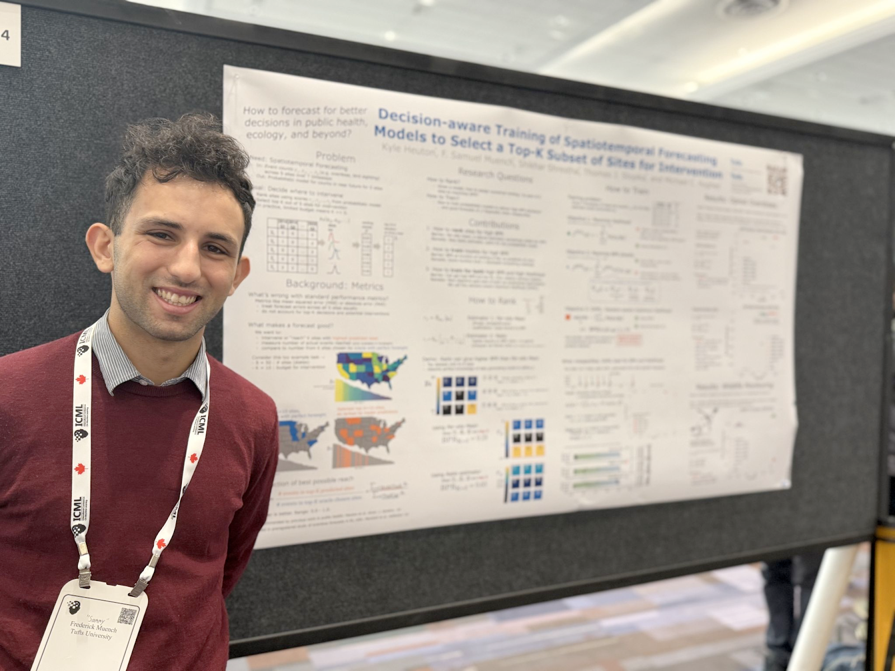
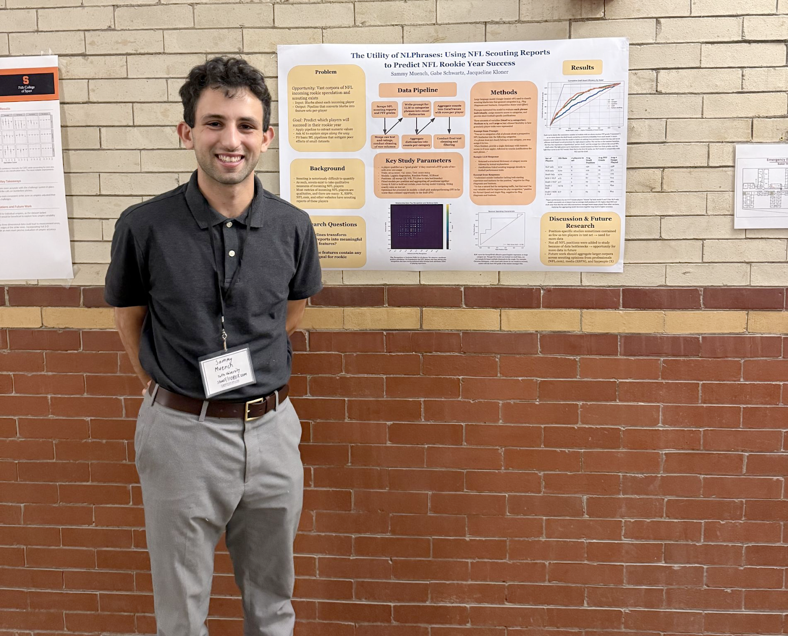

Projects
Research and applied work in machine learning and AI.

Decision-aware Training of Spatiotemporal Forecasting Models
A novel approach to training spatiotemporal forecasting models that optimizes for downstream decision-making tasks, specifically selecting a top K subset of sites for intervention.
Read on arXiv →

The Utility of NLPhrases: Using NLP to Predict NFL Rookie Success
An innovative application of natural language processing to predict which NFL rookies will succeed in the league.
View Project →